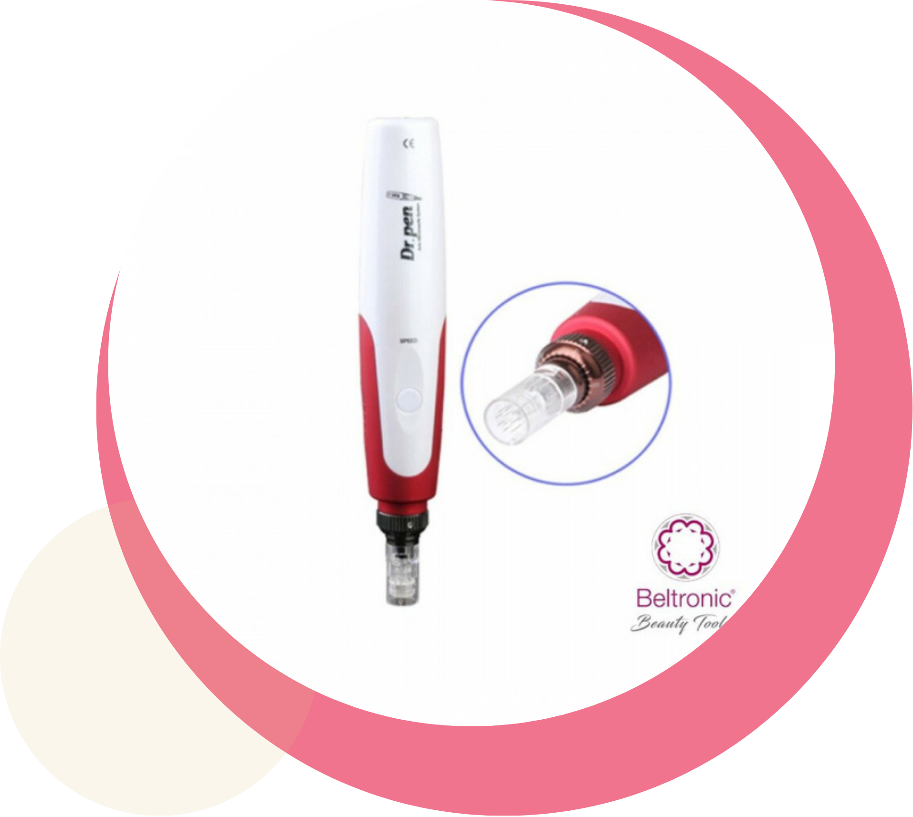

¡Descubrí nuestros tratamientos!
Cuando nos visites, recibirás siempre un asesoramiento personalizado para tu piel, orientándote sobre el tratamiento más adecuado para ti. Ofrecemos una amplia gama de servicios, desde masajes relajantes hasta procedimientos faciales avanzados como el Microneediling.”
¡Vení y disfruta la experiencia!
Te esperamos para que tengas la mejor experiencias. Siempre estamos predispuestas a brindarte lo mejor para tu piel.
Microneediling
El Microneedling, también conocido como terapia de inducción de colágeno, es una técnica mínimamente invasiva que consiste en la aplicación de pequeñas agujas en la superficie de la piel. Entre los beneficios más destacados del microneedling, se incluyen la estimulación del colágeno y elastina, mejora la textura de la piel, reduciendo arrugas y líneas finas, reducción de cicatrices de acné, ayuda a minimizar la apariencia de cicatrices y poros dilatados, uniformidad del tono de la piel, disminuye la pigmentación irregular y las manchas solares, y proporciona una apariencia más fresca y juvenil
